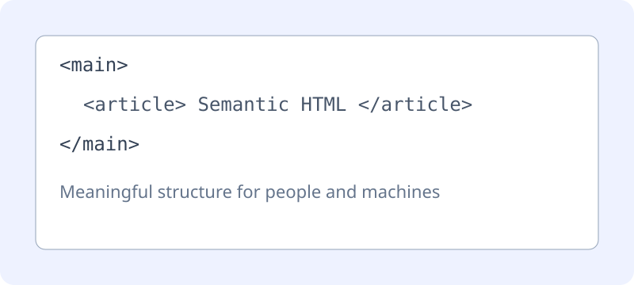
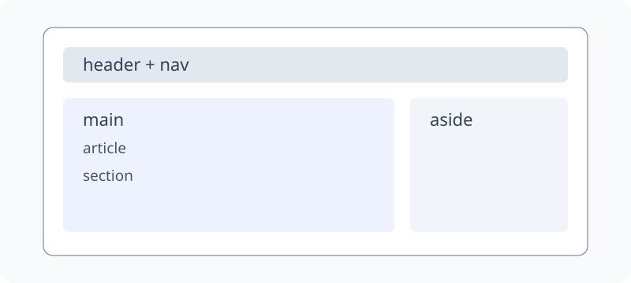
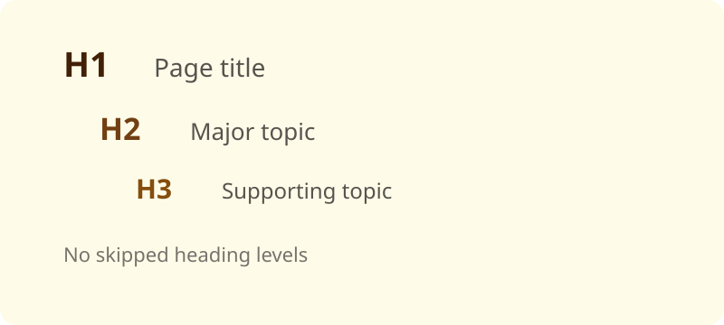
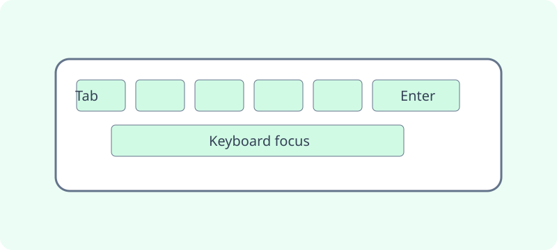

What semantic HTML means
Semantic HTML uses elements according to the meaning of their content rather than choosing elements only for visual appearance. A nav communicates navigation, an article identifies self-contained content, and a button communicates an action.

Meaning over appearance
Visual design can change without changing meaning. This separation helps browsers, search engines, assistive technologies, and developers understand each part of the document.
Building a clear page structure
A well-structured article can use header for introductory material, nav for navigation, main for primary content, article for a self-contained publication, sections for major topics, and footer for closing information.

Headings create an outline
This page has one h1. Major topics use h2, and supporting topics use h3. No heading level is skipped.

Using images accessibly
Informative images need alternative text that communicates their purpose. Decorative images should have empty alternative text so a screen reader can ignore them.

Semantic elements at a glance
| Element | Purpose | Typical content |
|---|---|---|
| header | Introductory content | Title, branding, navigation |
| nav | Navigation landmark | Primary or section links |
| main | Primary page content | Main article or application content |
| article | Self-contained content | Post, story, guide, or news item |
| section | Thematic grouping | A major topic within the article |
| footer | Closing information | Author, date, related links |
Accessibility audit checklist
The implementation includes a first-focusable skip link, visible keyboard focus, semantic landmarks, a logical heading hierarchy, meaningful alternative text, a decorative image with empty alt text, and accessible table headers.
Publication details
Published .